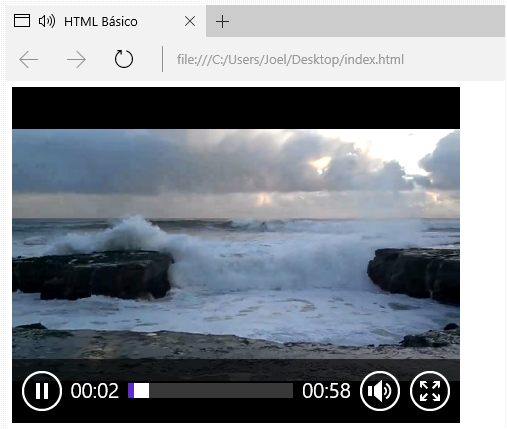

Semelhante ao áudio, também podemos inserir vídeos nas páginas HTML utilizando a tag video, adicionada na HTML5, como na Listagem 16.
Dessa vez, além dos atributos já vistos no áudio, também precisamos informar a largura (width) e a altura (height) do vídeo, a fim de mantê-lo adequado ao layout.
O código da Listagem 17 pode ser utilizado quando desejarmos informar mais de um arquivo de vídeo como opções de carregamento, da mesma forma que vimos na tag audio. Nesse caso, os formatos suportados são MP4, WebM e Ogg.
O resultado agora pode ser visto na Figura 11.
